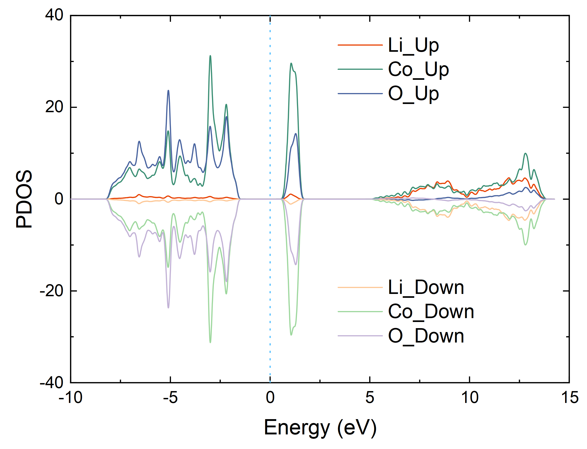
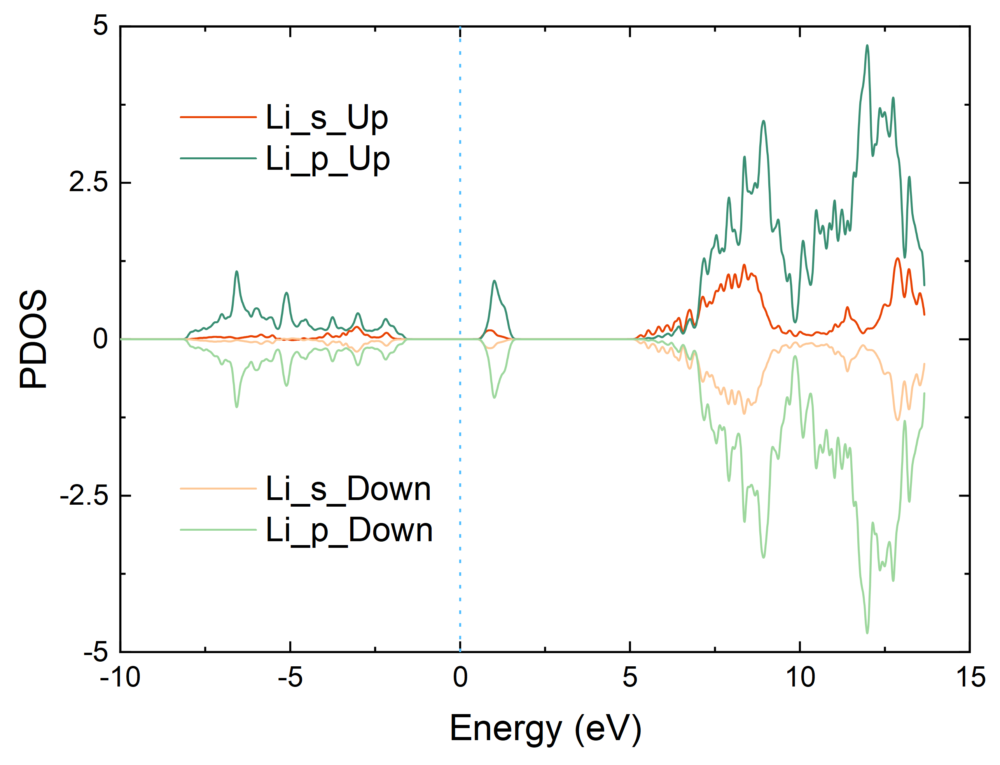

ABACUS 计算 PDOS
作者：陈涛，邮箱：chentao@stu.pku.edu.cn
审核：陈默涵，邮箱：mohanchen@pku.edu.cn
最后更新时间：2024/10/12
一、PDOS 文件分析
ABACUS 使用 LCAO 基组进行自洽迭代场计算（Self-Consistent Field，SCF）或 NSCF（Non-Self-Consistent Field，NSCF）计算时，可以在 INPUT 文件里设置 out_dos 为 2 在输出 DOS（Density Of States）的同时输出 PDOS（Partial DOS），PDOS 的文件格式是 xml，其文件内容在英文文档里有介绍：Calculating DOS and PDOS — ABACUS documentation
下面简单介绍一下 PDOS 文件：
1. 能量范围（横坐标）
- 第一行
<pdos>代表输出为 pdos，PDOS 文件最后一行会有</pdos>代表 pdos 内容结束 - 第二行的
2表示自旋极化计算（npsin=2） - 第三行表示该
PDOS文件一共有 720 个不同的轨道，不同轨道的内容会在后面介绍 - 第四行
<energy_values units="eV">到</energy_values>中的内容代表 pdos 的能量范围，即横坐标值
<pdos>
<nspin>2</nspin>
<norbitals>720</norbitals>
<energy_values units="eV">
0.00000
0.01000
0.02000
0.03000
0.04000
0.05000
......
24.96000
24.97000
24.98000
24.99000
25.00000
</energy_values>
......
</pdos>
2. 不同轨道的 DOS
<orbital>中index="1"表示第"1"条轨道，atom_index="1"表示第"1"个原子，species="Li"表示元素为"Li"- l="0"，m="0"，z="1"分别代表角量子数为"0"，磁量子数为"0"，每个角量子数上对应的径向轨道为"1" 例如 Li 在标准原子轨道库里是 DZP，具体轨道为 4s1p，如下表所示共 7 个：4 个 s 轨道（分别对应 z 取 1 到 4；l 取 0；m 取 0 到 2l，即 0），3 个 p 轨道（对应 z 取 1；l 取 1；m 取 0 到 2l，即 0，1，2），更具体的介绍可以参考数值原子轨道基组的个数
<data>到</data>中的内容代表该轨道的 dos，两列分别对应 spin 为上和下的 dos
| Li | s | p | |||||
|---|---|---|---|---|---|---|---|
| l | 0 | 0 | 0 | 0 | 1 | 1 | 1 |
| m | 0 | 0 | 0 | 0 | 0 | 1 | 2 |
| z | 1 | 2 | 3 | 4 | 1 | 1 | 1 |
<orbital
index="1"
atom_index="1"
species="Li"
l="0"
m="0"
z="1"
>
<data>
0.00000000 0.00000000
0.00000000 0.00000000
0.00000000 0.00000000
0.00000000 0.00000000
0.00000000 0.00000000
......
0.02085550 0.02085546
0.01939430 0.01939436
0.01791958 0.01791972
0.01638296 0.01638315
0.01475548 0.01475571
</data>
</orbital>
二、绘制 PDOS
有三种方式，分别对应 species, atom_index, index
1. species
- 提取指定元素的 PDOS，会在
PDOS_FILE下生成species-*.dat文件，其中*代表指定的元素，第一列为横坐标能量范围，第二列到最后一列分别为不同 spin 的 pdos
species: [species_1, species_2, species_3, ...]
# eg:
# species : ["Li", "Co", "O"]

- 提取指定元素的不同 l（s:0, p:1, d:2, f:3, ......）的 PDOS，会在
PDOS_FILE下生成species-*文件夹，每个文件夹下生成species-*_l.dat文件，其中*代表指定的元素，第一列为横坐标能量范围，第二列到最后一列分别为不同 spin 的 pdos
species : { species_1: [s, p, d], species_2: [s, p], ... }
# eg:
# species : {"Li": [0, 1], "Co": [0, 1, 2, 3], "O": [0, 1, 2]}

- 提取指定元素的不同 l 和 m（m:0, 1, ..., 2l）的 PDOS，会在
PDOS_FILE下生成species-*文件夹，每个文件夹下生成species-*_l_m.dat文件，其中*代表指定的元素，第一列为横坐标能量范围，第二列到最后一列分别为不同 spin 的 pdos
species : { species_1: { s: [m_0], p: [m_0, m_1] }, species_2: { s: [m_0], p: [m_0, m_1], ... }}
# eg:
# species : {"Li": { 0: [0], 1: [0, 1, 2] }, "Co": { 0: [0], 1: [0, 1, 2], 2: [0, 1, 2, 3, 4], 3: [0, 1, 2, 3, 4, 5, 6] }, "O": { 0: [0], 1: [0, 1, 2], 2: [0, 1, 2, 3, 4] }}

2. atom_index
- 提取指定原子的 PDOS，会在
PDOS_FILE下生成atom_index-*.dat文件，其中*代表指定的原子，第一列为横坐标能量范围，第二列到最后一列分别为不同 spin 的 pdos
atom_index : {atom_index_1, atom_index_2, atom_index_3, ...}
# eg:
# atom_index : {1, 2, 3, 16, 32}
- 提取指定原子的不同 l（s:0, p:1, d:2, f:3, ......）的 PDOS，会在
PDOS_FILE下生成atom_index-*文件夹，每个文件夹下生成atom_index-*_l.dat文件，其中*代表指定的元素，第一列为横坐标能量范围，第二列到最后一列分别为不同 spin 的 pdos
atom_index : { atom_index_1: [s, p, d], atom_index_2: [s, p], ... }
# eg:
# atom_index : {1: [0, 1], 17: [0, 1, 2, 3], 34: [0, 1, 2]}
- 提取指定原子的不同 l 和 m（m:0, 1, ..., 2l）的 PDOS，会在
PDOS_FILE下生成atom_index-*文件夹，每个文件夹下生成atom_index-*_l_m.dat文件，其中*代表指定的元素，第一列为横坐标能量范围，第二列到最后一列分别为不同 spin 的 pdos
atom_index : { atom_index_1: { s: [m_0], p: [m_0, m_1] }, atom_index_2: { s: [m_0], p: [m_0, m_1], ... }}
# eg:
# atom_index : {1: { 0: [0], 1: [0, 1, 2] }, 17: { 0: [0], 1: [0, 1, 2], 2: [0, 1, 2, 3, 4], 3: [0, 1, 2, 3, 4, 5, 6] }, 34: { 0: [0], 1: [0, 1, 2], 2: [0, 1, 2, 3, 4] }}
3. index
- 提取指定原子轨道对应的 PDOS，会在
PDOS_FILE下生成index-*.dat文件，其中*代表指定的原子轨道，第一列为横坐标能量范围，第二列到最后一列分别为不同 spin 的 pdos
index : {index_1, index_2, index_3, ...}
# eg:
# index : {1, 2, 3, 4}
三、绘制 PDOS 的流程
https://github.com/deepmodeling/abacus-develop/tree/develop/tools/plot-tools
使用 abacus-plot 程序可以绘制 PDOS，具体步骤如下：
1. 安装 abacus-plot
cd /path_to_abacus/tools/plot-tools
python setup.py install
2. 准备输入文件 config.json
{
"pdosfile": "PDOS",
"efermi": 6.585653952007503,
"species" : ["Li", "Co", "O"]
}
pdosfile：实际PDOS文件的路径（相对路径和绝对路径均可）efermi：费米能，单位是 eV，可以在输出文件running_scf.log里得到（关键字：EFERMI）species：对应第二节介绍的三种输出模式参数
3. 运行 abacus-plot 输出 PDOS
abacus-plot -d -o